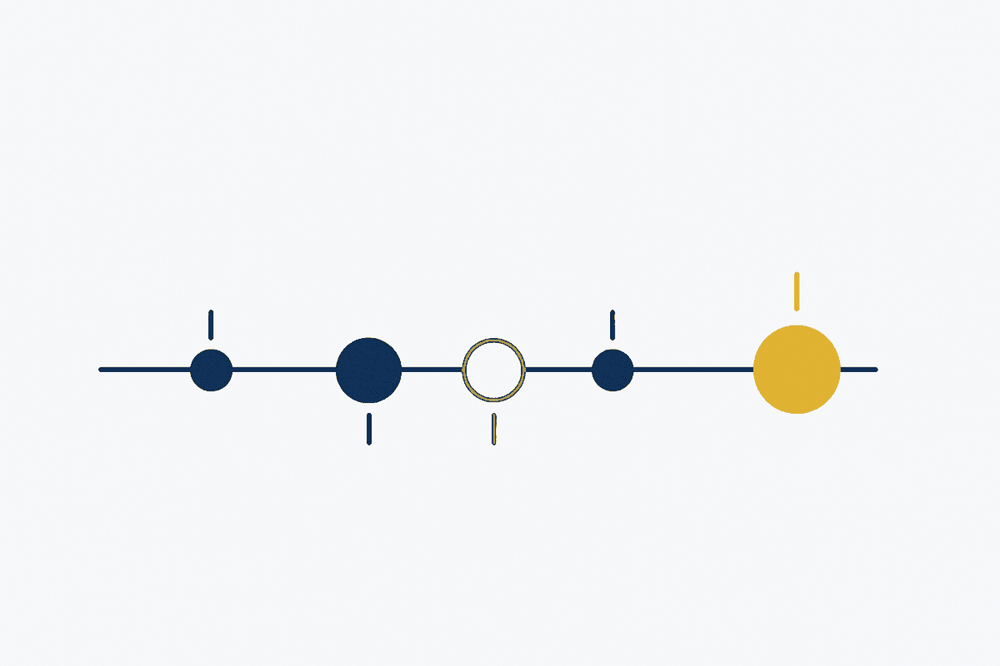

Not announcements — the working record. Every concept as it was named, every article as it was written, every pattern as it was recognised, together with the readings, sessions and second thoughts that prompted them. Most of it is small. That is the point: the thinking shows in the sequence, not in any one entry. Newest first.

Steven Bartlett (delegate, systematise, scale) read against Erik Scherder (the effort was never the inconvenience — it was the point).
Two books arguing across the table, and the only thing they accidentally agree on. Handing over the task is easy and mostly correct. But some of that work was not work — it was training. We removed friction on principle: most was waste, some was load-bearing, and almost nobody has been separating the two. The useful question is not *what can I hand over* but **which effort was doing the work on me?**